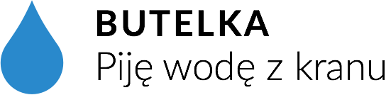

Startując półtora roku temu, zaczęliśmy odczarowywać negatywny wizerunek wody z kranu i wydaje nam się, że powoli widać tego efekty. Akcję Piję wodę z kranu niestrudzenie prowadzimy we dwójkę, w czasie wolnym i za własne pieniądze.
Podjęliśmy poważną decyzję, że chcemy rozszerzyć nasze działania i dotrzeć do większej ilości osób. Po ponad rocznej działalności mamy na to sporo pomysłów! Żeby je zrealizować, potrzebujemy konkretnych środków i czasu, więc postanowiliśmy założyć fundację. Będziemy aktywnie poszukiwać partnerów i sponsorów, którzy umożliwią nam promowanie akcji, ale potrzebujemy też odrobiny waszego wsparcia. Dlatego możecie wesprzeć akcję przez zakup praktycznej butelki:
cena to 49zł z czego 9zł trafi na konto naszej fundacji.
— Michał i Szymon
Zamów butelkę i wesprzyj akcję!Butelki wyprodukowała dla nas firma Equa, są bardzo wytrzymałe, lekkie i szczelne (przetestowane przez nas w każdych warunkach!). Zrobione ze specjalnego tworzywa Eastman Tritan®, które nie zawiera BPA, są odporne na mycie w zmywarce i wyparzanie wrzątkiem. Mają dwie niezależnie nakrętki, więc łatwo je myć i wrzucić ulubione zioła albo owoce!